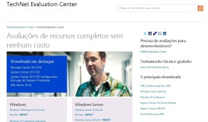

Como montar um Homelab - Software
HomelabCompartilhe esse post nas redes sociais...
Olá Homelabers! Nesse post vou falar sobre algumas das maneiras de se conseguir o software para o seu HomeLab.
Hardware é o que você chuta! Software é o que você xinga
Primeiro você entendeu por que ter um Homelab VMware em sua casa, depois você escolheu o Hardware e agora é a vez do Software.
Basicamente, existem 3 maneiras de você conseguir software para o seu Homelab. Sendo que por software vou considerar o Hypervisor e o Sistema Operacional para as VMs que irão rodar no seu lab.
* Comprando
* Software de avaliação
* Software Free/OpenSource
Comprando o seu Software
Já estou imaginando a nuvenzinha na sua cabeça: - Esse cara é louco. Ele acha que sou rico para comprar o software para rodar no meu HomeLab? Está maluco!
Não é bem assim. A maioria dos fabricantes dispõe de programas para profissionais por um preço bastante atraente. A Microsoft por exemplo, possui o programa MSDN, onde você pagando um valor anual, tem direito a “todos” os softwares para avaliação e laboratório.
Para softwares da VMware, existem 2 opções: o programa vEXPERT e o VMUG:Advantage (depois eu falo mais sobre esses dois programas). De qualquer maneira, a grande vantagem em comprar o software para seu HomeLab é ter suporte do fabricante e não precisar ficar remontando/reinstalando o seu lab sempre que o período de avaliação expirar.
Software de Avaliação
Todos os fabricantes tem disponível em seus sites downloads de versões de avaliação de seus softwares. Essas versões costumam não ter limitações e funcionam por geralmente 60 dias (esse periodo pode ser extendido em alguns casos e variam de fornecedor para fornecedor).
A grande desvantagem é ter de reinstalar o lab sempre que o período de avaliação expirar. Costumo utilizar as versões de avaliação para aqueles softwares que sei que não vou utilizar por um longo tempo ou que irei apenas fazer um teste rápido.
Software Free/OpenSource
Alguns fabricantes dispõe de versões free de seus softwares mas com algumas limitações. A VMware por exemplo, disponibiliza a versão freeware do ESXi (hypervisor) mas sem as principais funções de vMotion, HA, etc.
Existem diversas outras opções de virtualizadores que são Free, inclusive para uso comercial - como não existe almoço grátis, a pegadinha aqui é que você tem de pagar o suporte anual que costuma ser bastante caro - que podem ser instalados no seu lab sem a necessidade de reinstalação e/ou renovação de licença. O foco desse blog é falar de produtos VMware, mas pretendo fazer alguns posts sobre Hyper-V, Oracle VM, XEN Server, etc.
BONUS: Existe uma outra opção para você conseguir softwares para seu Homelab. Se você já trabalha na área e tem contato com o gerente de contas do que atende a sua empresa, converse com ele sobre o seu projeto de HomeLab (aproveite para mostrar esse blog hahaha) e peça para ele te fornecer uma licença para uso exclusivo no seu lab. Não é 100% de certesa que você vai conseguir, mas vale tentar. Eu já consegui alguns trials “eternos” de fornecedores camaradas por ai!
Links para download:
Microsoft

Programa Microsoft TechNet Evaluation Center ou MSDN Evaluation Center
Versões de avaliação por 180 dias
<a href="http://bit.ly/MicrosoftTechNetEvalCenter">http://bit.ly/MicrosoftTechNetEvalCenter</a> ou <a href="https://msdn.microsoft.com/pt-br/evalcenter/default.aspx">http://bit.ly/MSDNEvalCenter
</a>Necessita registro (grátis)
VMware
Download direto do site da VMware
Versão de avaliação por 60 dias
Produtos VMware - Trial - <a href="http://bit.ly/tryvmware">http://bit.ly/tryvmware</a> | ESXi 6.0 Free - <a href="http://bit.ly/dlvmwareesxifree">http://bit.ly/dlvmwareesxifree</a> | vCloud Suite 5.5 - Trial - <a href="http://bit.ly/dlvmware55">http://bit.ly/dlvmware55</a>
Necessita registro (grátis)
No proximo post da série vou começar com a instalação do VMware ESXi 5.5 que será a base do seu Homelab.
É isso Homelabers! Fico por aqui e espero que vocês tenham gostado. Até o próximo post e não se esqueça de deixar o seu comentário no post, seguir o HomeLaber no Twitter (@Homelaber) e curtir a nossa página no Facebook (fb.com/homelaber) para ficar sempre atualizado com as novidades do blog.
VC
Compartilhe esse post nas redes sociais...Valdecir Carvalho
Nerd e pai orgulhoso da Mariana e João. Profissional Sênior de TI com foco em arquitetura de infraestrutura e cloud computing. Blogueiro, podcaster, palestrante, amante de comunidades técnicas, fotógrafo aposentado e adora jogos antigos.
#vExpert · #VMUGLeader · #VUGBrasil · #vBronwBagBrasil · #VeeamVanguard